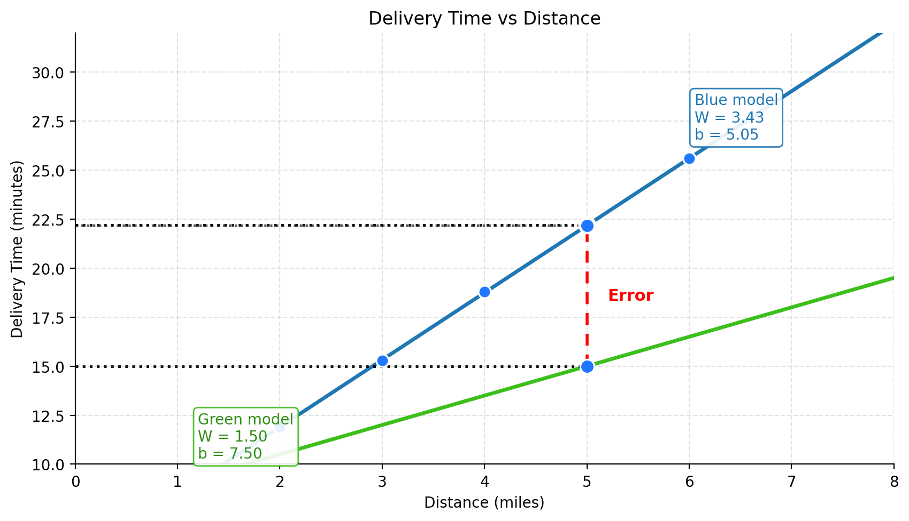
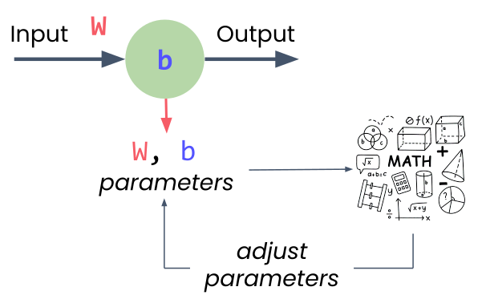
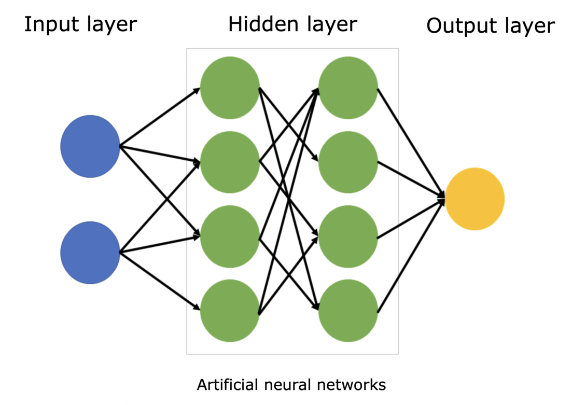
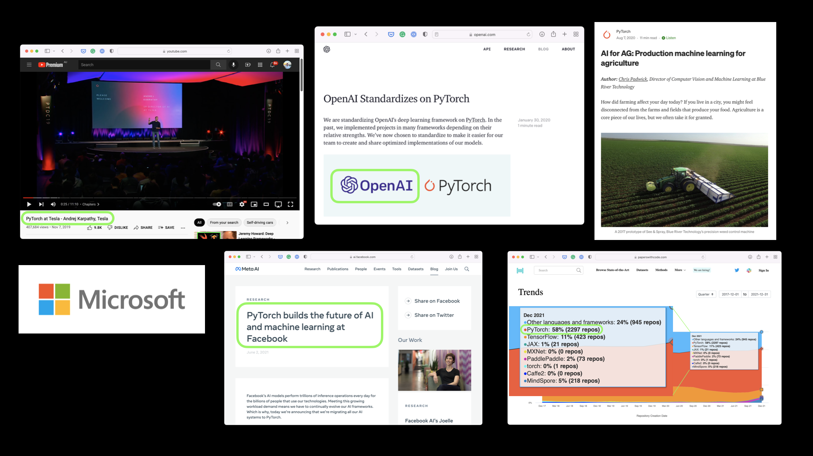

Use Case: Delivery Time Estimate
Scenario: Local delivery company, 30-minute promise
New order: 7 miles away
Question: Can you get there in under 30 minutes?
Now let’s ground these concepts with a concrete problem. You work for a local delivery company that promises 30-minute delivery. You’ve been late three times, and one more late delivery could cost you your job. A new order comes in - 7 miles away. Do you take it?
This is a perfect problem for a neural network to solve, if we have historical data. And we’ll use the simplest possible neural network - just one neuron - to tackle it.
Historical Delivery Data
2.0
11.9
3.0
15.3
4.0
18.8
5.0
22.2
6.0
25.6
7.0
?
Can we extrapolate the pattern?
Here’s some historical delivery data. Can you see the pattern? As distance increases from 2 to 6 miles, delivery time rises in a nearly straight-line pattern. If we plot this data, we’d see the points follow a straight line. A good predictive model would be… a line!
If we know the equation for that line, we can predict new values. And here’s the key insight: a single neuron is just a linear equation with two parameters - the weight and the bias.
A Single Neuron = A Linear Equation
Single Neuron
\(y = Wx + b\)
\(W\) : weight (slope)\(b\) : bias (y-intercept)\(x\) : input (distance)\(y\) : output (predicted time)
A single neuron is just a linear equation. That’s the equation for a straight line. The neuron needs to find the right values for W (weight) and b (bias) to create the best-fitting line through all the data points.
That search for the best values - that’s the learning in machine learning. The neuron starts with random values, measures how wrong its predictions are, and gradually adjusts W and b to improve.
Model

The blue model stays closer to the observed data points, so its prediction error is smaller. The green model misses the data by a larger margin, which means it is a worse fit.
How Does a Neuron Learn?

Parameter adjustment in a neuron
Start with random weight and bias
Make predictions
Measure error (how far off?)
Use calculus to find adjustment direction
Take small step toward better values
Repeat hundreds/thousands of times
Neural networks are known as universal approximators because they can approximate any function given enough data and computational power.
Here’s how the learning process works. The neuron starts with random values for weight and bias. It makes predictions and measures how far off each prediction is from the actual data. The further off, the bigger the total error.
Then it uses calculus (specifically, gradient descent) to figure out which direction to adjust the weight and bias. It’s essentially asking: “If I increase the weight just a little, does the error go up or down?” Once it figures that out, it takes a small step in the right direction, measures the error again, and repeats.
This process happens hundreds or thousands of times until the neuron finds values close to the best possible ones.
More Variables
Each input \(x_i\) has a weight \(w_i\) :
\[
y = w_1 x_1 + w_2 x_2 + w_3 x_3 + b
\]
Single input:
\(x_1\) (distance)→ \(y\) (delivery_time)
Multiple inputs:
\(x_1\) (distance)\(x_2\) (time_of_day)\(x_3\) (weather)→ \(y\) (delivery_time)
So far we’ve seen a neuron with one input (distance). But what if you want to consider multiple factors - distance, time of day, and weather?
A neuron with multiple inputs just extends the same pattern. It’s still a linear equation, just with more terms. Each input gets its own unique weight, they all add up, plus the single bias value. That’s really all a neural network is - neurons connected to neurons.
More Layers

Fully-connected Multi-layered Neural Network Structure
Layer: group of neurons with same inputs
Note: first layer is not counted (it is just the input)
Hidden layers: layers between input and output (added to learn higher complexity patterns)Network: connected layers
When you connect neurons together, you get layers. A layer is simply a group of neurons that all take the same inputs. When you connect one layer’s outputs to the next layer’s inputs, you’ve built a network.
The first layer takes in your raw data (distance, time of day, weather). The last layer gives your prediction (delivery time). All those layers in between are called hidden layers because you never directly set or see their values.
Soon, you’ll see how easy it is to stack these layers together in PyTorch. But for now, we’ll continue with just one neuron to build the foundation.
The PyTorch Framework
PyTorch is an open-source deep learning framework designed to accelerate the path from research prototyping to production deployment. Originally developed by Meta’s AI Research lab (FAIR) and released in 2016, it is now governed by the PyTorch Foundation under the Linux Foundation.
Who uses PyTorch?

PyTorch across research and industry
Meta, Tesla, Microsoft, OpenAI — research and production MLTesla’s self-driving vision models run on PyTorch
Also used beyond tech — e.g. computer vision on tractors in agriculture
Many of the world’s largest technology companies — Meta, Tesla, Microsoft — and AI labs like OpenAI use PyTorch to power research and ship ML into products.
Andrej Karpathy (formerly head of AI at Tesla) has talked about how Tesla uses PyTorch for self-driving computer vision. It’s not just Big Tech either — industries like agriculture use it for computer vision on tractors. If it’s trusted at that scale, it’s a solid framework to learn.
Why PyTorch?
Researchers love it — long the most-used framework on Papers With Code
GPU acceleration handled behind the scenesYou focus on data and algorithms; PyTorch makes it run fast
Proven in production — Tesla, Meta, and more ship real products on it
Machine learning researchers love PyTorch. For years it has been the most used deep learning framework on Papers With Code, which tracks research papers and their code.
PyTorch also takes care of GPU acceleration behind the scenes, so you can focus on manipulating data and writing algorithms while it keeps things fast.
And if companies like Tesla and Meta use it to power hundreds of applications, drive thousands of cars, and deliver content to billions of people, it’s clearly capable on the production side too.
Simple. Pythonic. Powerful.
import torch= torch.tensor([2.0 ])= torch.tensor([3.0 ])= a + bprint (result) # tensor([5.])
Let me show you what makes PyTorch special with a simple example. Adding two numbers in PyTorch looks just like regular Python code. This simplicity wasn’t always the case in deep learning frameworks.
The key insight here is that PyTorch makes deep learning feel like writing normal Python. This wasn’t true of early frameworks, which required complex setup and compilation steps just to do simple operations.
The Problem with Early Frameworks
Static Computational Graphs
Must define and compile everything upfront
No flexibility to change
Cryptic error messages
No standard Python debugging
Early deep learning frameworks used something called static computational graphs. Think of it like a factory assembly line - you had to design the entire production process before you could run anything. If you made a mistake or wanted to experiment, you had to stop everything, tear it down, and rebuild from scratch.
This made even simple operations complex. You couldn’t use normal Python if statements or loops. Error messages pointed to internal system code, not your actual mistakes. People spent more time fighting their tools than doing actual work.
PyTorch’s Solution
Dynamic Computation
Write clean Pythonic code
Use normal loops and if statements
Change anything, anytime
Error messages point to your code
Standard Python debugging
PyTorch emerged from researchers’ frustration with these limitations. The core principle: deep learning should feel like normal Python. You write clean code, and PyTorch handles the computational complexity behind the scenes.
This approach made PyTorch incredibly popular, especially in research where experimentation and flexibility are crucial. Today, it’s backed by a massive community and has become the go-to choice for everyone from students to cutting-edge AI researchers.
What’s Next?
The 6-stage ML pipeline
Building a neural network in PyTorch
Training your first model
Click here to go to Session 2: The ML Pipeline and Building Your First Model
In the next session, we’ll see the complete machine learning pipeline - the systematic process that every PyTorch project follows. Then you’ll build your first neural network and train it on this exact delivery problem. Just a few lines of PyTorch code will bring all these concepts to life.